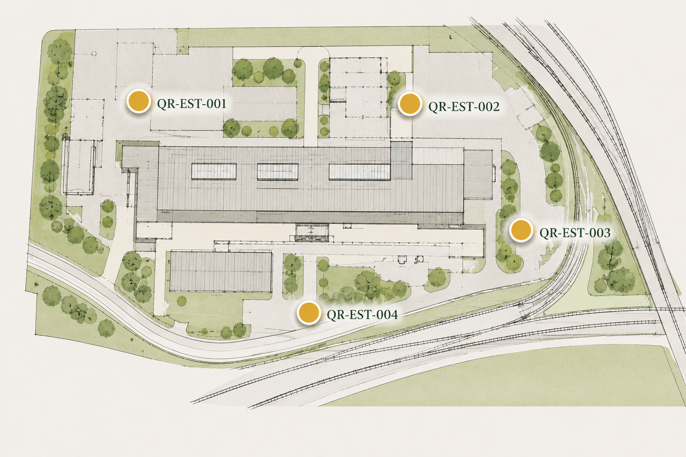

Runoff Awareness
Wet weatherCheck runoff paths, standing water, silt movement and soft verge condition after rainfall or heavy vehicle movement.
Hold / Strata Estates / Oakfield Depot / QR3 Drainage Inspection
Operational visibility for runoff, blockage reporting, spill pathways, inspection history, waterway protection and weather triggers.
Drainage governanceApproved operational guidance may be provided in workplace languages so staff, contractors, tenants, visitors and drivers can understand key instructions at the point of need.
Safety note: Safety-critical translations should be controlled and approved before use.

Check runoff paths, standing water, silt movement and soft verge condition after rainfall or heavy vehicle movement.
Confirm whether the inspection is routine, post-rainfall, contractor-requested or escalation-led before recording the condition.
Report blocked drains, covered gullies, damaged covers, backed-up water or debris restricting the drainage route.
Fuel, oil, hydraulic fluid or contaminated runoff must be escalated quickly where drains or water pathways may be exposed.
Link photos, condition notes, repeat observations and seasonal trends to the inspection point before access decisions are made.
Consider downstream watercourses, surface water paths, silt controls and emergency containment before flushing, clearing or disturbing drains.
Recent rainfall, freezing conditions, leaf fall, heat, dust and forecast storms can change access and inspection decisions.
Escalate if access becomes unsuitable for heavy vehicles, water is rising, a blockage repeats or pollution risk is present.
Runoff concern opened. Check rainfall, flow path, silt movement, vehicle activity, drain exposure and containment needs.
Inspection status opened. Confirm trigger, current weather, access condition, contractor dependency and whether escalation is already active.
Blockage report started. Capture cover, gully, drain route, debris type, backing-up water and access impact.
Spill risk logged. Identify material, source, drain pathway, downstream exposure and immediate containment controls.
Inspection note opened. Add photos, condition history, repeat observations, weather context and recommended follow-up.
Waterway protection review requested. Check downstream impact, containment, silt control and environmental escalation.
Weather trigger recorded. Link rainfall, freeze, leaf fall, storm forecast or dry conditions to current access and inspection decisions.
Estates escalation requested. Use where blockage, runoff, pollution risk or access condition needs a named operational decision.
Other drainage issue opened. Capture the condition, location, environmental risk and action needed.
Language support placeholder. Approved translated guidance would appear here in a live Hold deployment.